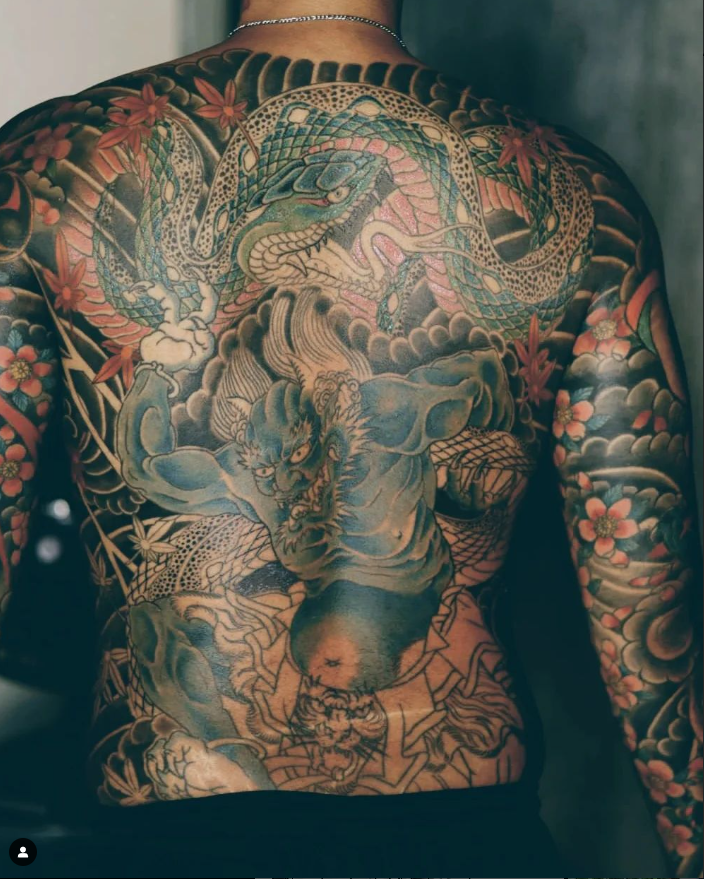

irezumi : a arte japonesa no japão
A arte da tatuagem no Japão, conhecida como Irezumi (入れ墨), é uma prática fascinante que atrai adeptos de todas as partes do mundo. Neste post, vamos explorar a evolução dessa expressão corporal, adentrando nos detalhes dessa famosa arte japonesa.
O termo Irezumi, que literalmente significa “inserir sumi (入墨)”, refere-se não apenas às tatuagens de estilo japonês, mas abrange qualquer forma de tatuagem, seja ela de origem japonesa ou não. No Japão, destaca-se o uso de uma tinta única, feita à base de fuligem de carvão vegetal e misturas de óleo de canola e outros ingredientes naturais. Essa tinta, conhecida como Sumi (墨), de cor preta, é utilizada na caligrafia tradicional japonesa e também muito usada na tatuagem tradicional japonesa.
Vamos desbravar um pouco mais sobre essa arte cativante que transcende fronteiras e mergulhar na rica tradição por trás do Irezumi, descobrindo os detalhes que tornam essa forma de expressão tão única e globalmente apreciada. Convido você a explorar conosco a jornada fascinante das tatuagens no Japão.
As tatuagens em todo o mundo evoluíram bastante, seguindo diferentes estilos ao longo dos anos, com a forte influência da cultura japonesa. No Japão, elas são conhecidas como Irezumi, e a arte da tatuagem no arquipélago tem uma longa história. Desde o período Jomon (14.000 – 300 a.C.), com vestígios de que as tatuagens já faziam parte das ilhas japonesas, conforme registrado no gishi wajin den, um texto de história chinesa que relata os primeiros encontros com os habitantes das ilhas Nipônicas.
A prática de tatuar criminosos durante o Período Edo (1603-1868) no Japão, isso não era uma prática exclusiva do povo japonês sendo encontradas também em outras culturas ao redor do mundo. No Japão Inicialmente, as tatuagens eram utilizadas para identificar criminosos condenados por seus delitos. Hoje, embora as tatuagens tenham se transformado em expressões artísticas, ainda quaisquer forma de tatuagem enfrentam certo preconceito na sociedade japonesa. Em muitos lugares, é proibido exibir publicamente tatuagens pequenas ou grandes de qualquer estilo, refletindo uma mentalidade conservadora que persiste ate os dias de hoje.
Apesar do Japão ser admirado mundialmente por sua sofisticação e de tradições, a tatuagem continua sendo associada ao submundo em todo território japonês. No entanto, globalmente, Irezumi se tornou um termo genérico para tatuagens de estilo japonês, conquistando grande popularidade em diversas partes do mundo.
os primórdios da tatuagem no japão
Os primórdios da tatuagem no Japão remontam ao século XVII, quando a prática começou a ser utilizada para marcar criminosos como forma de punição. Naquela época, ideogramas e barras de cores escuras adornavam a pele daqueles que haviam infringido a lei. Contudo, ao longo dos anos, o conceito de Irezumi expandiu-se, abrangendo uma variedade de estilos de tatuagem e incorporando, por vezes, elementos tradicionais japoneses.
Inicialmente associada à penalização de delitos, a tatuagem evoluiu para uma forma de expressão mais ampla. As marcas escuras nas peles dos infratores deram lugar a uma rica e variada formas de designs, muitas vezes incorporando elementos emblemáticos da cultura japonesa. Essa metamorfose transformou a tatuagem de uma prática restrita a criminosos em uma forma de arte que reflete a rica tradição e estética japonesas.
>Hoje, ao explorarmos a história da tatuagem no Japão, testemunhamos uma jornada fascinante que transcende a punição inicial para se tornar uma expressão de criatividade e identidade, conectando-se de uma maneira única e com a rica herança cultural do país.

A técnica moderna de tatuagem, realizada com máquinas, reflete uma forte influência de palavras e designs ocidentais, particularmente da cultura norte americana, associada à palavra “TATTOO” (タトゥー) Ou YOBORI( 洋彫り). Já a abordagem tradicional japonesa, reconhecida pelos termos japoneses como WABORI（和彫り), destaca-se por um estilo genuinamente japonês. Ao longo do tempo, o estilo de tatuagem japonês conquistou reconhecimento global, cultivando uma base de admiradores apaixonados por essa forma de arte. A transformação da tatuagem no Japão remontam ao período Edo (1603 – 1867), marcando o início da utilização de cores e desenhos na decoração corporal japonesa.
A iconografia do Irezumi, no período mencionado, foi profundamente influenciada pela rica cultura visual da época. Essa influência se manifestava em designs inspirados em quimonos, pinturas, objetos utilitários e nas xilogravuras ukiyo-e. Esses motivos decoravam a pele de diversos grupos sociais, desde jogadores de azar até bombeiros e trabalhadores da área portuária do Japão. Nesse contexto histórico, muitos elementos visuais e técnicos fundamentais foram desenvolvidos, incluindo o método de tatuar tebori (手彫り – “tatuagem à mão”), a introdução de cores e os formatos expansivos que cobriam grandes áreas do corpo. Essa evolução histórica contribuiu para a singularidade e diversidade da arte da tatuagem japonesa contemporânea.
As temáticas do Irezumi variam amplamente, desde representações de animais, deuses, demônios e guerreiros até personagens da literatura, sobrepostos a fundos inspirados em elementos naturais, frequentemente adornados com flores ou folhas sazonais. Outro termo japonês para tatuagem é “shisei” (刺青), que incorpora os ideogramas toge (刺 – perfurar) e ao (青 – azul ou verde), refletindo uma das possíveis tonalidades da tinta sumi, dependendo da diluição ou desbotamento na pele.
- “入れ墨” é composto pelos caracteres “入れ” (ire), que significa “inserção” ou “colocar”, e “墨” (zumi), que significa “tinta”. Juntos, eles formam a palavra “入れ墨” (irezumi), que também se refere à prática de tatuar.
- “刺青” é composto pelos caracteres “刺” (shi/iri), que significa “picada” ou “perfurar”, e “青” (zumi), que significa “azul” ou “tinta”. Juntos, eles formam a palavra “刺青” (irezumi), que também significa tatuagem.
Ambas as formas são usadas, e a escolha pode depender do contexto específico, da preferência pessoal ou regional. Em contextos mais tradicionais, você pode encontrar “刺青” (irezumi), enquanto “入れ墨” (irezumi) também é amplamente utilizado. Ambas as formas são compreendidas como referentes à arte da tatuagem no Japão.
os filmes de yakuza que inspiraram a tatuagem no japão

Shôwa zankyô-den: Karajishi botan filme de 1966
Sem dúvida, os filmes de Yakuza como "um yakuza tem que matar"influenciaram muito na popularização da tatuagem
Em um enredo impactante, um membro da yakuza enfrenta uma obrigação sombria: assassinar um homem. Após cumprir sua pena, o protagonista visita o túmulo da vítima, onde se depara com o filho e a esposa, alheios à sua verdadeira identidade. Movido por uma jornada de redenção, ele se empenha em reparar os danos causados, desencadeando uma trama intensa e repleta de reviravoltas.

Cenas do filme em que o personagem exibe suas tatuagens de flores de peônia com o leão Foo Dog tornaram-se uma inspiração significativa para os entusiastas da tatuagem japonesa.
A influência japonesa na tatuagem ocidental
O entusiasmo dos americanos pelas tatuagens tradicionais japonesas surgiu da interação comercial e cultural que floresceu entre o Japão e o Ocidente após o ano de 1853, quando o Japão encerrou dois séculos de política externa isolacionista no arquipélago.
Nas décadas seguintes, marinheiros mercantes ocidentais e turistas abastados começaram a migrar para essa nação que anteriormente estava reclusa. As composições exuberantes, dinâmicas e de corpo inteiro das tatuagens tradicionais japonesas cativaram a imaginação dos viajantes ocidentais da época.
Adquirir essa espetacular arte corporal – e passar pela longa e custosa provação de ser tatuado à mão (TEBORI) 手彫り por um mestre japonês – tornou-se uma conquista de status cobiçada pelos nobres ingleses e pelas socialites britânicas e americanas do final do século XIX. Os marinheiros também adquiriram tatuagens japonesas enquanto estavam nos portos e levaram consigo a nova estética para casa.

Kazuma Kiryu revelando sua Irezumi "Ryu" do jogo Ryu ga gotoku
Rapidamente, tatuadores japoneses e ocidentais adaptaram a forma de arte tradicional às demandas da cultura popular ocidental: tatuagens menores, de “lembrança”, tornaram-se uma maneira de ter uma marca como recordação de uma viagem ou marcar momentos. Em um repertório de design estático, como dragões, guerreiros, animais e flores, que podiam eternizar as viagens pelo arquipélago japonês – em grande parte desvinculado de seu simbolismo original, que antes eram marcas usadas apenas por criminosos japoneses. Logo, substituíram os guerreiros heróicos, figuras cômicas e deuses poderosos que tanto enriqueceram a tatuagem tradicional japonesa por figuras relacionadas aos temas de navegação e desenhos que se tornaram ícones de marinheiros britânicos e americanos. Na década de 1890, vários tatuadores japoneses abriram lojas na Europa, Grã-Bretanha, América e Austrália, enquanto os tatuadores americanos ofereciam o “mais recente em designs europeus e japoneses”

Irezumi aplicada em pele negra, realizado por Toshio Shimada e Gabriel Cordeiro
Os desenhos de tatuagens no estilo “japonês” continuam em alta demanda até os dias de hoje, à medida que as pessoas ocidentais continuam adeptas as místicas e duradoura arte da tatuagem japonesa.
.png)